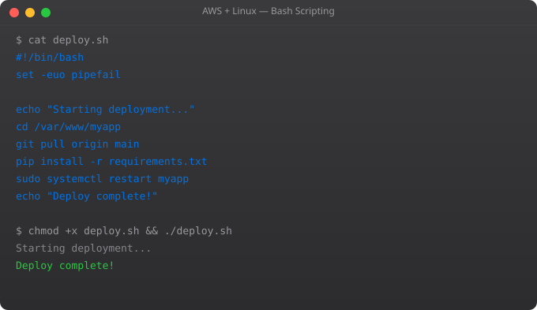

Bash scripting is the glue that holds Linux and AWS together in real-world environments. Rather than running commands manually every day, you write scripts that run them automatically. This is how real cloud operations work — almost everything is automated. In this part, we learn enough Bash to write useful automation scripts for our EC2 and AWS setup.
A Bash script is a plain text file containing a series of Linux commands. When you run the script, all those commands execute in sequence — exactly as if you had typed them one by one in your terminal. Scripts let you repeat complex workflows with a single command, run tasks at scheduled times, respond to conditions and errors, and build reproducible infrastructure setup processes.
#!/bin/bash
# This line tells Linux to use bash to run this script
echo "Hello, AWS automation!"
echo "Today is: $(date)"
echo "Server hostname: $(hostname)"
echo "Logged in as: $(whoami)"# Make executable
chmod +x hello.sh
# Run it
./hello.sh#!/bin/bash
# Assign variables (no spaces around =)
NAME="Suraj"
BUCKET="my-srjahir-bucket-2026"
DATE=$(date +%Y-%m-%d)
echo "Name: $NAME"
echo "Bucket: $BUCKET"
echo "Date: $DATE"
# Read from environment
REGION=${AWS_DEFAULT_REGION:-ap-south-1} # use default if not set
echo "Region: $REGION"#!/bin/bash
FILE="/var/log/nginx/error.log"
if [ -f "$FILE" ]; then
echo "Error log exists. Checking size..."
SIZE=$(wc -l < "$FILE")
if [ "$SIZE" -gt 1000 ]; then
echo "Warning: error log has $SIZE lines"
else
echo "Log size OK: $SIZE lines"
fi
else
echo "No error log found"
fi#!/bin/bash
# Loop through a list
for SERVICE in nginx ssh cron; do
STATUS=$(systemctl is-active $SERVICE)
echo "$SERVICE: $STATUS"
done
# Loop through files
for FILE in /var/log/nginx/*.log; do
echo "Processing: $FILE"
done#!/bin/bash
BUCKET="my-srjahir-bucket-2026"
DATE=$(date +%Y-%m-%d)
BACKUP_DIR="/tmp/backup-${DATE}"
LOG_FILE="/var/log/backup.log"
echo "[$(date)] Starting backup..." >> "$LOG_FILE"
# Create backup directory
mkdir -p "$BACKUP_DIR"
# Copy files to backup
cp -r /var/www/html/ "$BACKUP_DIR/website"
cp -r /etc/nginx/ "$BACKUP_DIR/nginx-config"
# Compress everything
tar -czf "/tmp/backup-${DATE}.tar.gz" -C /tmp "backup-${DATE}"
# Upload to S3
if aws s3 cp "/tmp/backup-${DATE}.tar.gz" "s3://${BUCKET}/backups/"; then
echo "[$(date)] Backup uploaded successfully" >> "$LOG_FILE"
else
echo "[$(date)] ERROR: Backup upload failed" >> "$LOG_FILE"
exit 1
fi
# Clean up temp files
rm -rf "$BACKUP_DIR" "/tmp/backup-${DATE}.tar.gz"
echo "[$(date)] Backup complete" >> "$LOG_FILE"Cron is Linux's job scheduler. It runs scripts automatically at set times:
# Edit your crontab
crontab -e
# Cron syntax: minute hour day month weekday command
# Run backup at 2 AM every day
0 2 * * * /home/ec2-user/daily-backup.sh
# Run every hour
0 * * * * /home/ec2-user/check-logs.sh
# Run every 5 minutes
*/5 * * * * /home/ec2-user/health-check.sh
# View scheduled jobs
crontab -l#!/bin/bash
# Check if Nginx is running, restart if not
if ! systemctl is-active --quiet nginx; then
echo "[$(date)] Nginx is down. Restarting..." >> /var/log/health.log
sudo systemctl restart nginx
echo "[$(date)] Nginx restarted" >> /var/log/health.log
fi
# Check disk usage
DISK_USAGE=$(df / | awk 'NR==2{print $5}' | tr -d '%')
if [ "$DISK_USAGE" -gt 80 ]; then
echo "[$(date)] WARNING: Disk usage at ${DISK_USAGE}%" >> /var/log/health.log
fiThis kind of script, scheduled to run every 5 minutes with cron, gives you basic self-healing capability for your server. In Part 9, we go deeper into the AWS CLI — controlling your entire infrastructure from the Linux terminal.
The AWS CLI supports all AWS API operations, making it possible to build powerful automation scripts without writing application code. Combine standard Linux tools with AWS CLI commands for sophisticated operations:
#!/bin/bash
set -euo pipefail
BUCKET="my-backup-bucket"
DATE=$(date +%Y%m%d_%H%M%S)
BACKUP_DIR="/tmp/backup_${DATE}"
# Create backup
mkdir -p "$BACKUP_DIR"
pg_dump myapp_db > "${BACKUP_DIR}/database.sql"
tar czf "/tmp/backup_${DATE}.tar.gz" -C /tmp "backup_${DATE}"
# Upload to S3
aws s3 cp "/tmp/backup_${DATE}.tar.gz" "s3://${BUCKET}/backups/backup_${DATE}.tar.gz" --storage-class STANDARD_IA
# Notify
echo "Backup completed: backup_${DATE}.tar.gz" | aws sns publish --topic-arn "arn:aws:sns:ap-south-1:123456789:backup-notifications" --message file:///dev/stdin
# Cleanup
rm -rf "$BACKUP_DIR" "/tmp/backup_${DATE}.tar.gz"
echo "Backup and upload complete"Rather than hardcoding configuration or storing secrets in environment files on instances, use AWS SSM Parameter Store or Secrets Manager. Scripts can retrieve configuration at runtime: DB_PASSWORD=$(aws ssm get-parameter --name /myapp/db/password --with-decryption --query Parameter.Value --output text). This centralizes configuration management, provides encryption for sensitive values, enables easy rotation, and creates an audit trail of every parameter access.
Write a bash script that uses the AWS CLI to: list all EC2 instances in your account with their state and instance type, find all S3 buckets and report their sizes using aws s3 ls --summarize --human-readable, and store a test secret in SSM Parameter Store then retrieve it in the same script. Schedule the EC2 listing script to run daily using cron and log output to a file with timestamps.
Cloud computing is a domain where deep intuition — the ability to make good architectural decisions quickly, to diagnose problems efficiently, and to anticipate how systems will behave under load — develops through accumulated hands-on experience. Every project you build on cloud infrastructure teaches you something that cannot be learned from documentation alone. The cost surprises, the permission errors, the networking debugging sessions, the performance investigations — these are not obstacles to learning, they are the learning. The engineers who have built genuinely deep cloud intuition have usually accumulated it through many projects over several years, not from any single course or certification. Start building things, make mistakes safely in learning environments, and accumulate that experience deliberately.